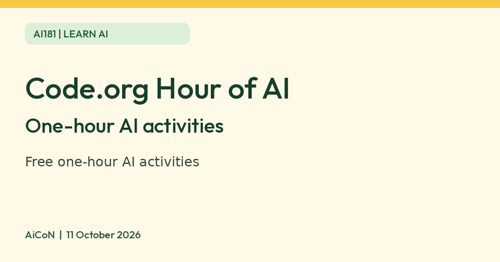

Code.org Hour of AI: free one-hour AI activities, with Hindi and Hinglish
Code.org Hour of AI offers hands-on one-hour AI activities. Its India page lists three, one in Hindi and Hinglish, and Code.org-hosted courses can be tried without an account. The Hindi/Hinglish AI Basics link opens a separate provider, whose account rules we did not verify.

What it is
The Hour of AI is a set of hands-on, one-hour introductions to AI from Code.org. Code.org's page says the activities are for every grade level and learning context and are available in multiple languages. Its India page names three starting points: AI for Oceans (train an AI bot to identify fish and trash, to learn how AI makes decisions), Mix and Move (design a dancer, code a music remix and choreograph a dance, on a laptop) and AI Basics (use generative AI, on a mobile). It says AI Basics can be explored in Hindi and Hinglish.
Is it free
Yes, as far as Code.org's pages show. Its teachers page says Code.org provides "free curriculum and tools" and describes its AI 101 course as "Free for any teacher". We did not find a price on the activity pages. Code.org's privacy policy says you do not need an account or to give personal information to try its courses or Hour of Code tutorials, though your learning progress is not saved without an account, and your IP address is collected.
Is it available in India
Yes, there is an official India page: "Hour of AI with Foundation for Innovation & Action" on code.org. It lists the three activities above and a link to the global page with more than 100 activities.
How to try it
- Open the Hour of AI India page on code.org and pick an activity.
- For AI for Oceans or Mix and Move, click Start now and change the language in the bottom left corner. Use a laptop for Mix and Move.
- For AI Basics, the India page suggests a mobile phone and Hindi or Hinglish. Its Start now button opens ai-basics.codeyogi.org, not a Code.org-hosted lesson. Check that provider's age, account and privacy requirements before continuing.
Limits to know
- These are one-hour learning activities, built mainly for students and classrooms. They are an introduction, not a full course.
- Code.org learning progress is not saved unless you create an account. This is not a statement about the external AI Basics provider.
- Choose the age and device guidance on the activity page; the catalog covers different grade levels, not one universal age range. Music in an activity is not a grant to reuse it outside that activity.
- We did not test the activities ourselves.
Privacy and classroom use
No account does not mean no data collection. Code.org says it collects IP addresses and its policy describes device, usage and uploaded data depending on the feature. For children, a parent or teacher should check the selected activity and account rules. Use fictional examples instead of children's full names, school IDs, photos or private documents. The AI Basics link is external: do not apply Code.org's privacy or no-account promise to CodeYogi. We did not test the lessons, inspect external signup or establish an external retention policy.
Frequently asked questions
Is the Hour of AI free?
Code.org describes its curriculum and tools as free and does not show a price on the activity pages. Most Code.org courses can be tried without an account; external activity providers may have different requirements.
Sources: Hour of AI, Hour of AI India, Code.org teachers, Code.org privacy policy. Checked 11 October 2026.